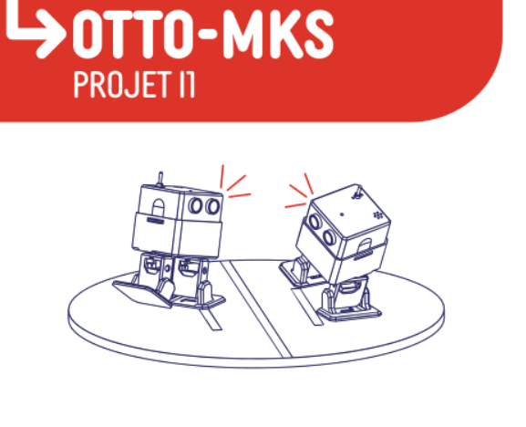
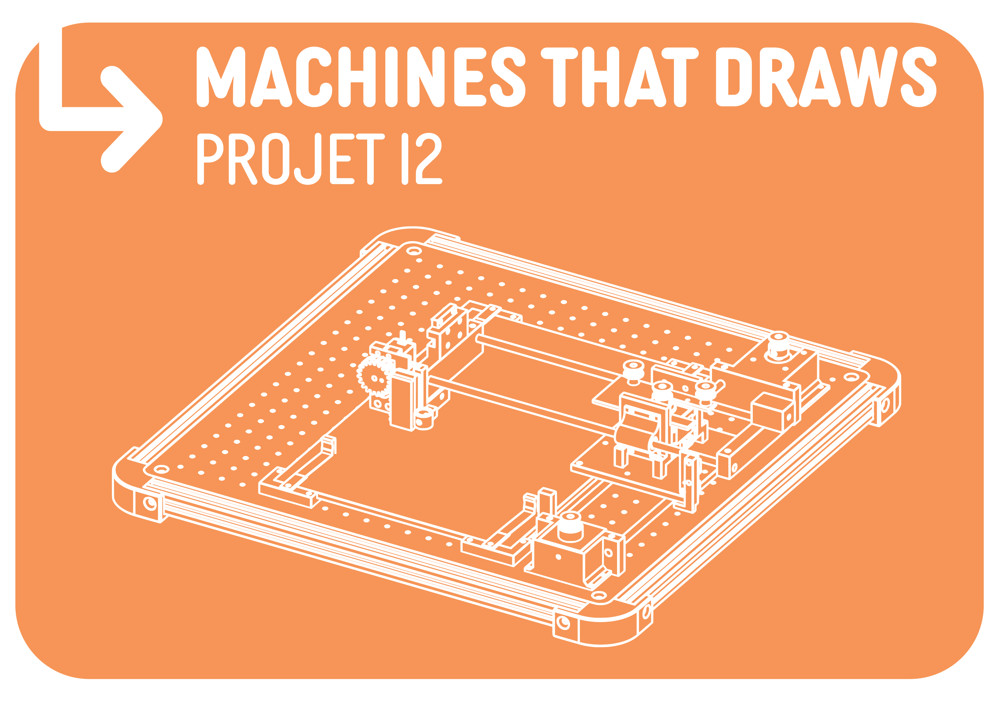
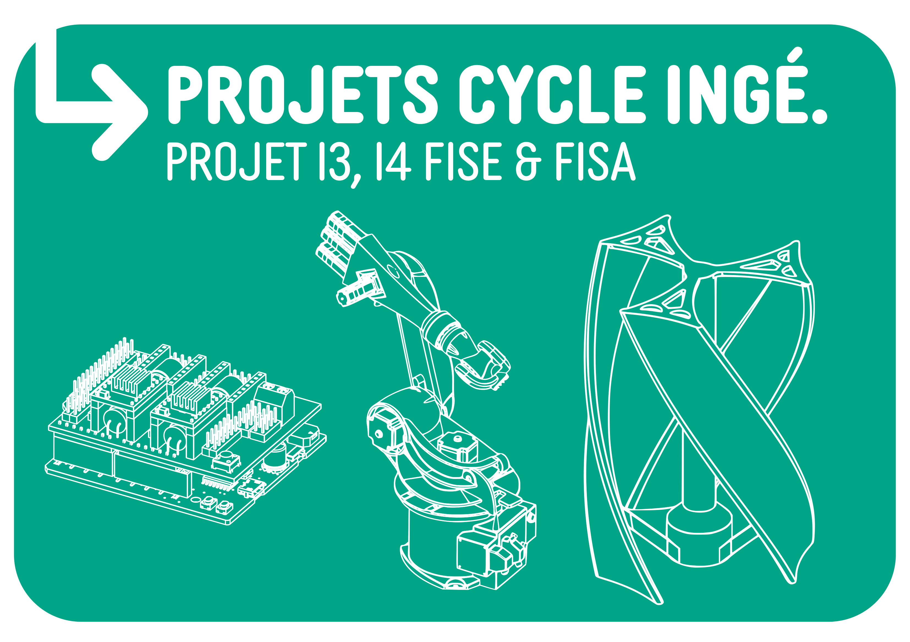
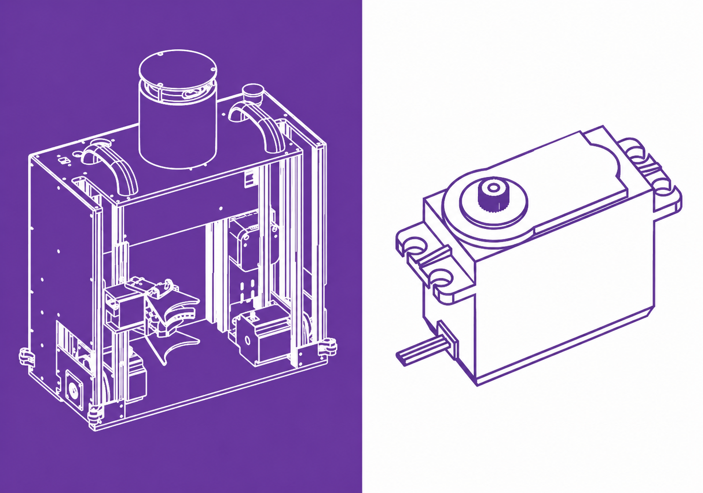
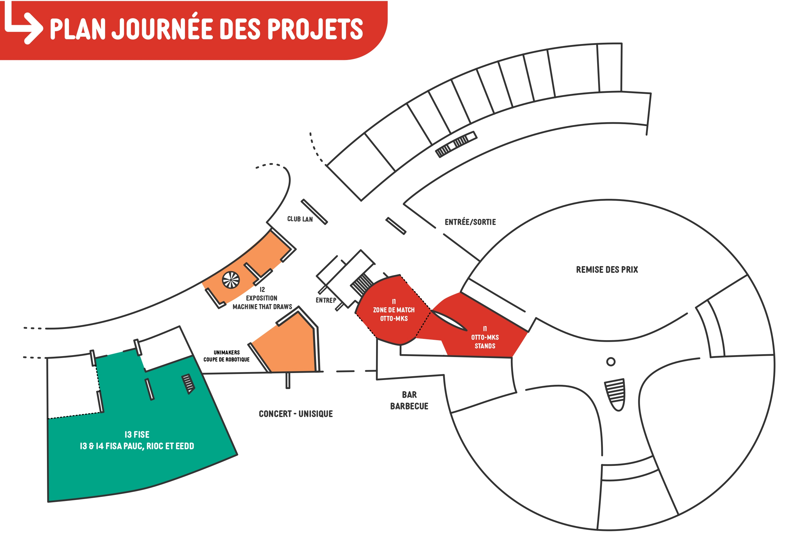

Bienvenue à la
Journée des Projets !
Découvrez, échangez et votez pour
vos projets préférés.


Projet 1ère année

Projet 2ème année

Projet 3ème année

Projet 4ème année
I1 - Ottolympiades
Les étudiants de première année présenteront leur tout premier projet d'ingénierie à travers leur participation aux Ottolympiades, une compétition ludique et technique centrée autour des robots Otto, qu'ils ont entièrement conçus, fabriqués et programmés dans le cadre du cours Otto-MKS.
Ce projet constitue pour beaucoup leur première expérience complète de fabrication numérique et de programmation embarquée. Après avoir découvert les bases de la conception 3D, de l'impression et de l'assemblage mécanique, les étudiants ont programmé leurs robots pour qu'ils soient capables de se déplacer, détecter des obstacles et interagir avec leur environnement.
Lors de cette journée, les robots affronteront d'autres Otto, y compris ceux réalisés par des élèves de lycées invités, dans une série d'épreuves originales :
- Course chronométrée - vitesse et précision
- Parcours d'obstacles - agilité
- Combat de sumo - stratégie et robustesse
- Tir à la corde - force motrice
Cette compétition, à la fois pédagogique et festive, est arbitrée par UniMakers. Elle valorise l'apprentissage par la pratique, l'appropriation des outils du MakerSpace, et le plaisir de voir son robot évoluer dans un environnement réel.
I2 - Machine That Draws
Les étudiants de deuxième année présentent un projet original mêlant créativité et ingénierie à travers Machines That Draws, un défi artistique et technique consistant à concevoir des machines capables de dessiner de manière autonome.
Ce projet, réparti sur deux semestres, plonge les étudiants dans une démarche complète de conception et d'innovation. À partir d'une feuille blanche, ils imaginent des systèmes uniques sans modèle imposé, combinant design, mécanique et programmation.
Après avoir conçu leurs machines en CAO, les étudiants fabriquent leurs pièces au MakerSpace grâce à l'impression 3D et à la découpe numérique. Ils intègrent ensuite des composants tels que moteurs pas à pas et servomoteurs, puis développent des programmes capables de générer des dessins de façon autonome.
Le projet se déroule en deux grandes phases :
- Proof of Concept (POC) - validation des principes mécaniques et premiers tracés
- Optimisation et création - amélioration du système et exploration artistique
Lors de la journée des projets, ces machines fonctionneront en continu, produisant en temps réel des œuvres uniques. Chaque réalisation illustre la capacité des étudiants à transformer une idée abstraite en un objet fonctionnel, innovant et parfois même poétique.
I3 - PuzzleBot
En troisième année, les étudiants relèvent un défi technique commun à travers le projet PuzzleBot. L'objectif est de concevoir un système robotique capable de résoudre automatiquement un puzzle physique, en mobilisant l'ensemble des compétences acquises au cours de leur formation.
PuzzleBot propose un cadre commun, tout en laissant une grande liberté dans les approches techniques. Chaque équipe développe ainsi sa propre solution pour répondre à une même problématique, en combinant électronique, mécanique, informatique et algorithmique.
Le projet implique la conception d'un système intégrant :
- Système mécanique - manipulation physique du puzzle
- Détection et analyse - identification des pièces
- Résolution algorithmique - logique de résolution automatisée
Lors de la Journée des Projets, chaque groupe disposera d'un espace pour présenter ses travaux au public : prototype, démonstrations en direct, supports techniques et documentations seront au rendez-vous.
C'est l'occasion pour les visiteurs d'échanger directement avec les étudiants sur leurs choix techniques, les difficultés rencontrées, les résultats obtenus et les perspectives d'évolution.
Ce projet incarne pleinement l'esprit d'ingénierie collaboratif porté par UniLaSalle, avec des réalisations concrètes qui témoignent de la capacité des étudiants à innover, résoudre des problèmes complexes et travailler en équipe.
Programme
Ouverture
Arrivée des étudiant·es
I1: Homologations Ottolympiades
I2 : Installation des machines et œuvres
I3 : Préparation des stands puzzle bot & projets filières
Arrivée des visiteurs JPO
I1: brief des équipes &début des épreuves
I2 & I3 : Début Passage des jurés
Pause repas - Barbecue AGE
Repas & échanges
Concert d’Unisique, set un imix et activités bds
I1 : Suite des épreuves Ottolympiades
I2 & I3 : Suite de l’exposition
Activités sportives en libre accès bds
Finale sumo ottolympiades
Remise des prix
RENDEZ VOUS EN AMPHI JULES VERNE
Rangement et Fin de journée
Plan
